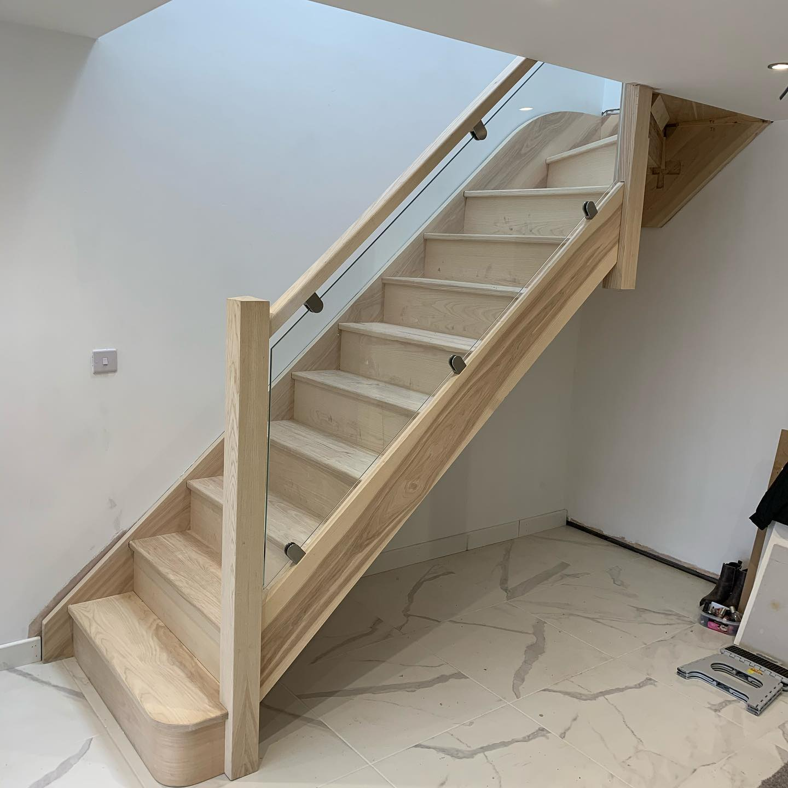
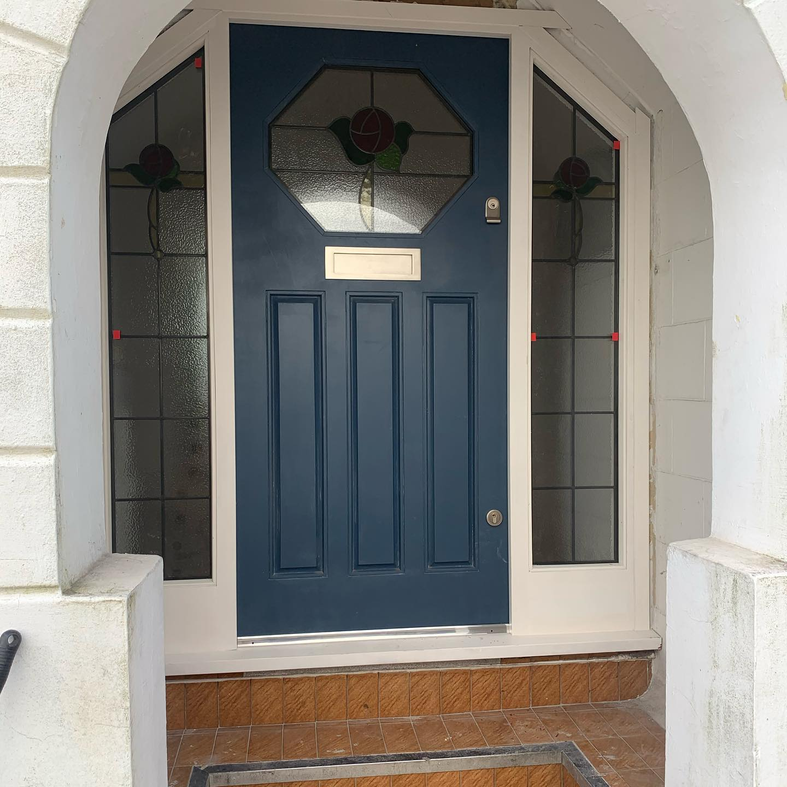
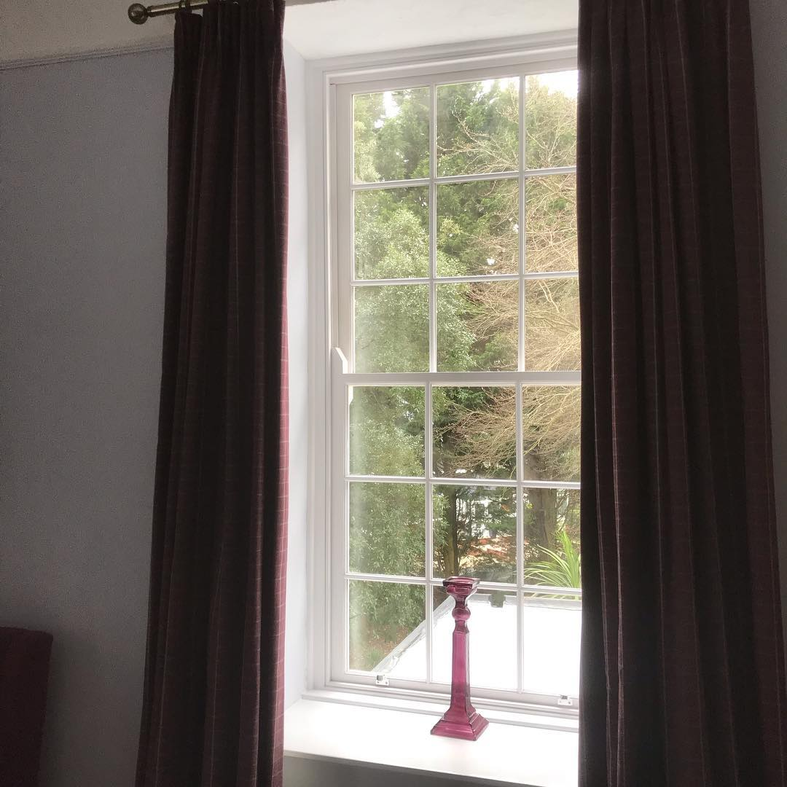
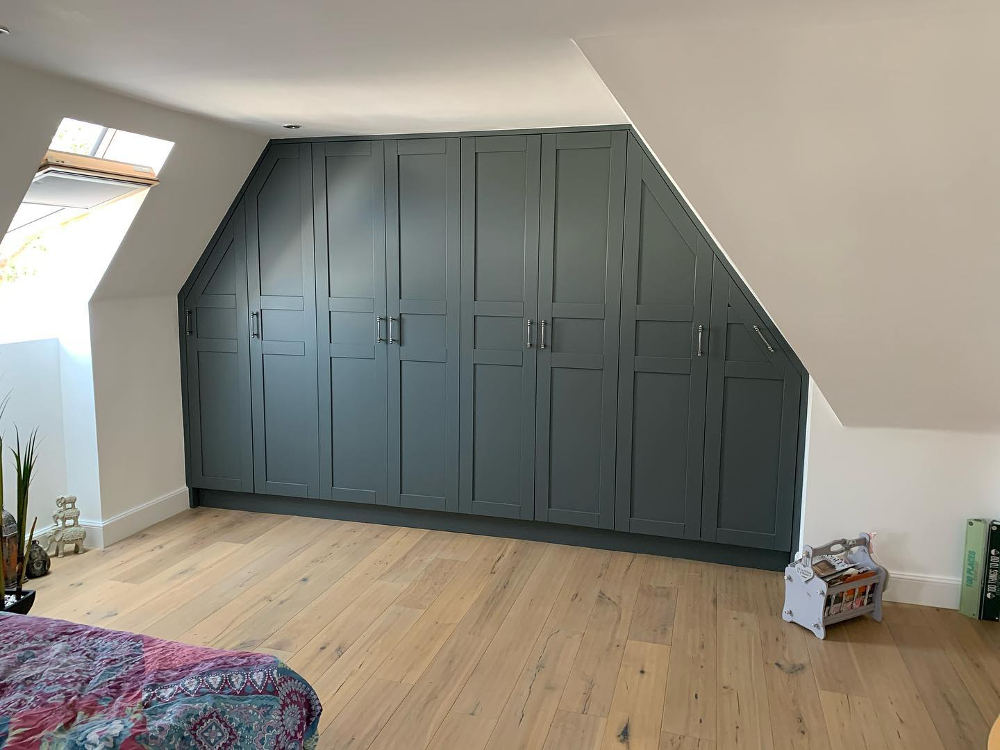
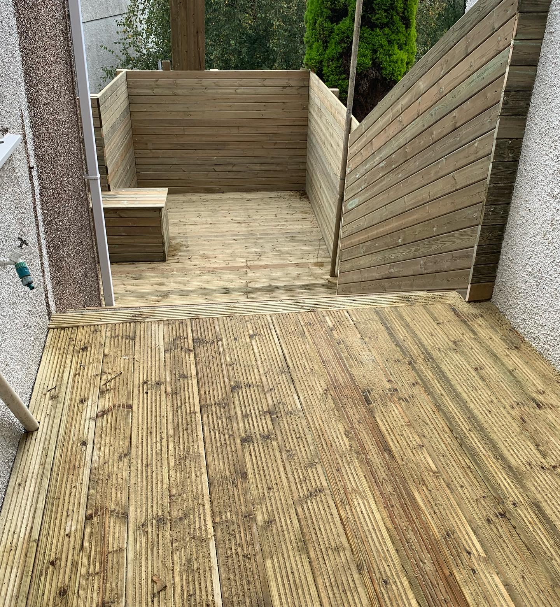

Stairs
We are experienced in making all types of staircases, open rise, cut string, traditional, modern, and contemporary. Using a vast range of materials, soft woods that can be stained or painted, and using hard woods such as oak and ash enables us to create a diverse range of quality stairs for every budget.

Doors
We can provide any style door to suit your taste, with the front door a focal point to your house, it needs to be presented well. We can help! Whether it is just installation, renovation of existing doors or whether new made to measure doors are needed, R.W Joinery provide quality bespoke doors made to your needs.

Windows
R.W Joinery can provide a wide range of windows, wether it be box sash windows, flush casement, storm proof windows. We can provide this in the wood finish of your choice, we can also renovate and restore your windows to their original state, making them shine once again. Get in touch and we'll do the rest.

Storage
Hallway and Bedroom storage solutions are hugely popular these days, wether it be a walk in wardrobe or under-stairs storage solution. R.W Joinery is where you can let or imagination run wild, with so alternatives to tackle a storage problem. Get in contact with any ideas you have, we'll see if we can help.

Kitchens
We make anything from your crisp modern style to old traditional style kitchens. As they're handmade, we can make them to suit any shape or size kitchen to make the most of the space you have. We can work with all styles and finishes to suit your room and taste. This is the benefit of having a bespoke handmade kitchen.
